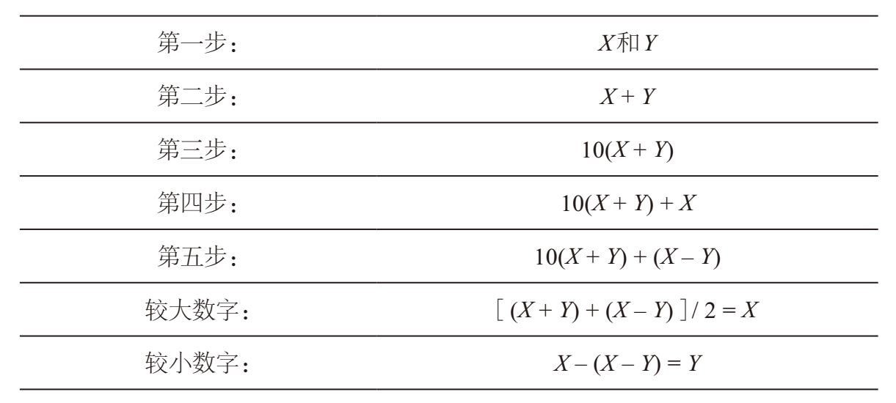

在本章开头，我为大家介绍了一个魔术。在结束本章之前，我再为大家介绍一个基于代数原理的魔术。
第一步：从1到10中选择两个数字。
第二步：把这两个数字相加。
第三步：乘以10。
第四步：加上你最初选择的两个数字中较大的那个。
第五步：减去你最初选择的两个数字中较小的那个。
第六步：告诉我你现在得到的数字，我就可以说出你最初选择的那两个数字分别是几！
无论你是否相信，只要你告诉我最后的数字，我就可以准确地说出你最初选择的那两个数字是什么。例如，如果你告诉我的数字是126，你最初选择的两个数字就是9和3。这个魔术比较神秘，即使你重复表演几次，观众也很难找出其中的奥秘。
下面，我来揭开其中的秘密。要找出其中较大的那个数字，你先取最后得数的末位数（在这个例子中，最后得数的末位数是6），然后与前面数位上的数（12）相加，再除以2。这样，我们就可以找出较大的数字是 (12 + 6) / 2 = 18 / 2 = 9。接下来，你用这个较大的数字（9），减去最后得数的末位数（6），即可得到较小的那个数字。在这个例子中，就是9 – 6 = 3。
再举两个例子。如果最后得数是82，那么较大的数字是 (8 + 2) / 2 = 5，较小的数字是5–2 = 3。如果最后得数是137，那么较大的数字是 (13 + 7) / 2 = 10，较小的数字是10–7 = 3。
这是为什么呢？假设你最初选择的两个数字是X和Y，其中X大于或等于Y。根据魔术的要求以及下表中的代数运算，我们会发现在完成第五步之后，你会得到10(X + Y) + (X – Y)。

知道第五步的结果，有什么用呢？注意，10(X + Y)这个数字的末位数必然是0，而0之前数位上的数字是X + Y。既然X和Y都是从1到10之间的数字，且X大于或等于Y，那么X – Y必然是一位数（介于0到9之间）。因此，最后得数的末位数必然是X – Y。例如，如果你最初选择的两个数字是9和3，那么X = 9，Y = 3。因此，最后得数的前两位数是X + Y = 9 + 3 = 12，末位数是X – Y = 9 – 3 = 6，也就是说，最后得数必然是126。一旦我们知道X + Y和X– Y的值，就可以算出它们的平均数 ［(X + Y) + (X – Y)］/ 2 = X。同时，我们可以通过 ［(X + Y) –(X – Y)］/ 2确定Y的值［在这个例子中，Y= (12 – 6) / 2 = 6 / 2 = 3］。不过，我发现，既然X – (X – Y) = Y，那么我们只需用较大数字减去最后得数的末位数，就可以方便地找到较小数字。
如果你希望在魔术表演时挑战更大的难度（难度再大，观众都不怕，因为他们可以使用计算器），也可以让观众从1到100中任选两个数字。在这种情况下，你要让他们在第三步乘以100，而不是10。除此之外，其余步骤不变。例如，如果他们最初选择的两个数字是42和17，那么在第五步，他们给出的最后数字就是5 925。你先将这个数字的最后两位与其余数位分开，然后求两个部分的平均值。因此，较大数字是 (59 + 25) / 2 = 84 / 2 = 42。再从较大数字中减去最后得数的后两位，即可得到较小数字，本例中就是42 – 25 = 17。整个过程的原理与前面介绍的大致相仿，只不过在第五步得到的数字是100(X + Y) –(X – Y)，其中X – Y是最后得数的后两位。
再举一例。如果最后得数是15 222（即X + Y = 152，X – Y = 22），那么较大数字是 (152 + 22) / 2 = 174 / 2 = 87，较小数字是87 – 22 = 65。
[1] “10 Q”（ten Q）与“谢谢”（thank you）的发音比较接近。——译者注
[2] 皮埃尔·德·费马（Puerre de Fermat，1601—1665），法国律师和业余数学家，被视为17世纪最伟大的法国数学家之一。——译者注
[3] 勒内·笛卡儿（René Descartes，1596—1650），法国著名哲学家、物理学家、数学家、神学家，被视为解析几何之父。——译者注
[4] 原文“He wasn’t Abel!”的谐音是“He wasn’t able!”（他证明不了！）——译者注